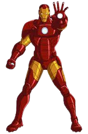

Tony Stark é um industrial bilionário, que também é um brilhante inventor. Ao ser sequestrado ele é obrigado por terroristas a construir uma arma devastadora mas, ao invés disto, constrói uma armadura de alta tecnologia que permite que fuja de seu cativeiro. O Homem de Ferro possui uma armadura motorizada que lhe dá voo, força e durabilidade sobre-humanas e uma variedade de armas.